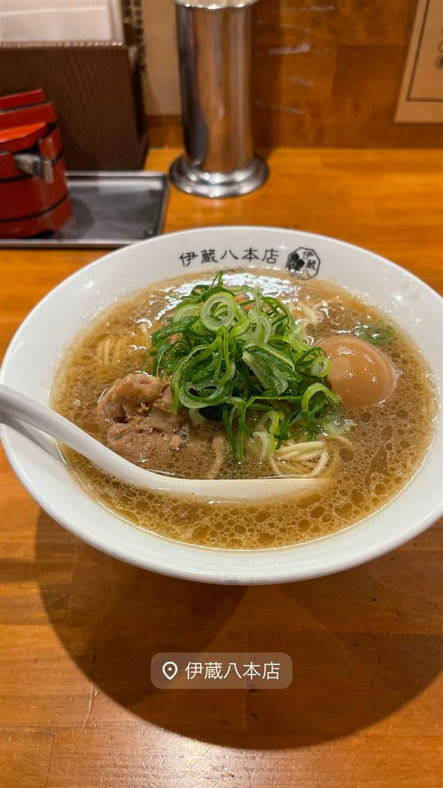

中華そば つけそば 伊蔵八本店
朝は麺、昼はラーメン、夜はつけ麺と表情を変える一軒
伊蔵八本店
濃厚豚骨魚介つけ麺ブームの草分け「つけめんTETSU」を築いた小宮一哲氏が、2019年に西日暮里で開いた店。かつて同じ西日暮里で「つけめん哲」を開業した思い出の地への凱旋出店で、朝はぽん麺、昼はラーメン、夜はつけ麺と時間帯で表情を変える。
TRIVIA
豆知識
- 店主は「つけめんTETSU」創業者。かつて西日暮里で「つけめん哲」を開業した縁の地への“凱旋”出店
- 朝・昼・夜で業態（メニュー）を変える営業スタイル
REVIEWS
世間の評判
89.3ラーメンDB
節系出汁の重厚感と値上げ幅の小ささ
- 節系や魚介の出汁が効いた重厚感のあるスープを評価する声が多い
- 博多系の固めの細麺は量もしっかりあり食べ応えがあると評価されている
- 姉妹店と比べて濃厚さは控えめでシナチクが入っていないのを残念がる声もある
ラーメンデータベース 口コミ79件・最新 2026-01
| 創業 | 2019年8月11日開業 |
|---|---|
| 系譜 | 創業者・小宮一哲氏は2005年に千駄木で「つけめんTETSU」を創業し、濃厚豚骨魚介つけ麺ブームの草分けとなった。2014年に同社株式を売却し、2019年に西日暮里で伊蔵八を開業 |
| 看板 | 中華そば、鶏の濁りそば、つけそば |
| こだわり | 椎茸と鶏ガラを合わせた和風だしに煮干しを効かせたスープ。具はチャーシューとねぎのみでスープの味を主役にする。麺は博多ラーメンをやや太くしたようなパツパツ食感 |
| どこから | 都心 |
| 営業時間 | 月〜日 11:00-23:00 |
| 予算 | 昼 ¥1,000～¥1,999 夜 ¥1,000～¥1,999 |
| 場所 | 西日暮里 東京都荒川区西日暮里 |
| メモ | 西日暮里駅すぐ。朝は「ぽん麺」、昼は「ラーメン」、夜は「つけ麺」と時間帯で業態を変える。中華そば750円、つけそば800円 |
食べたもの：ラーメン
NEARBY
近い店・同じ系統の店
-
 ★
醤油・中華そば 大口駅
中華そば 髙野
元美容師の店主が作る、昆布水に浸した自家製麺の中華そば
昼 ¥1,000～¥1,999 夜 ¥1,000～¥1,999
★
醤油・中華そば 大口駅
中華そば 髙野
元美容師の店主が作る、昆布水に浸した自家製麺の中華そば
昼 ¥1,000～¥1,999 夜 ¥1,000～¥1,999
-
 ★
醤油・中華そば 池尻大橋駅
八雲（やくも）
骨を一切使わないのに深いコクの特製ワンタン麺
昼 ¥501～¥1,000 夜 ¥501～¥1,000
★
醤油・中華そば 池尻大橋駅
八雲（やくも）
骨を一切使わないのに深いコクの特製ワンタン麺
昼 ¥501～¥1,000 夜 ¥501～¥1,000
-
 ★
醤油・中華そば 六本木駅
入鹿TOKYO 六本木店
鶏・豚・貝・海老を別々に炊く独自のカルテットスープ
昼 ¥1,000～¥1,999 夜 ¥1,000～¥1,999
★
醤油・中華そば 六本木駅
入鹿TOKYO 六本木店
鶏・豚・貝・海老を別々に炊く独自のカルテットスープ
昼 ¥1,000～¥1,999 夜 ¥1,000～¥1,999
-
 ★
醤油・中華そば 千歳船橋
中華そば 西川
永福町大勝軒などで8年修行した店主の煮干しそば、百名店5年連続
昼 ¥1,000～¥1,999 夜 ¥1,000～¥1,999
★
醤油・中華そば 千歳船橋
中華そば 西川
永福町大勝軒などで8年修行した店主の煮干しそば、百名店5年連続
昼 ¥1,000～¥1,999 夜 ¥1,000～¥1,999
-
 ★
醤油・中華そば 祖師ヶ谷大蔵駅
世田谷中華そば 祖師谷七丁目食堂
柴崎亭店主が手がける、煮干しと小豆島醤油の中華そば
昼 ～¥999 夜 ～¥999
★
醤油・中華そば 祖師ヶ谷大蔵駅
世田谷中華そば 祖師谷七丁目食堂
柴崎亭店主が手がける、煮干しと小豆島醤油の中華そば
昼 ～¥999 夜 ～¥999
-
 ★
醤油・中華そば 鷺沼
麺処 懐や
中村屋仕込み、一度に2杯しか作らない淡麗系
昼 ～¥999
★
醤油・中華そば 鷺沼
麺処 懐や
中村屋仕込み、一度に2杯しか作らない淡麗系
昼 ～¥999
ONSEN & SAUNA